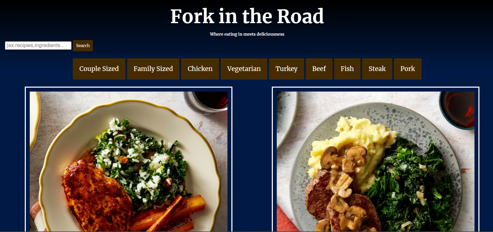

Overview
Context & Challenge
- Background / Description / Timeline / Budget / Purpose
- This project was the final for my IDM232 class, in which we learned PHP.
- The project was to take a spreadsheet of different recipes and each recipe's information and turn it into a recepe site
- This project took the whole 10 weeks that the class did and we worked on it as we learned about the syntax we needed to use
- The course had us purchase a 3 year plan for a domain-name which was about $95
- The purpose of this project was to demonstrate my skills using PHP as well as designing a website that had a lot of information from a database
- The Problem
- We needed to take a spreadsheeat of data with 37 recipies and only using 2 different pages and PHP we needed to make a functioning website that hosted all of those recipes, each with a unique page
- Goals & Objectives
- I had done some testing once I had finished the site and the PHP has worked throughout what I did, with this being the case, I would say this is a successful project as the code works well and I had adjusted the database's information with the small errors I came across. I would also recognize this project to be successful if anyone were to actually find and use it.
Process & Insight
For the design process, I had never really worked with anything that involves recipes or databases so I had looked online to other recipe sites for inspirationSolution